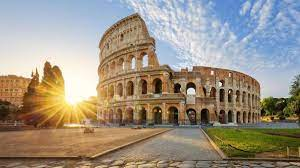

coliseo romano

La construcción del Anfiteatro Flavio, más conocido como Coliseo Romano, empezó alrededor del año 71 d.C. bajo el emperador Vespasiano. El Coliseo fue construido en un valle, después de haber secado un pequeño lago que Nerone usaba para el Domus Aurea, entre las colinas del Palatino, Esquilino y Celio.